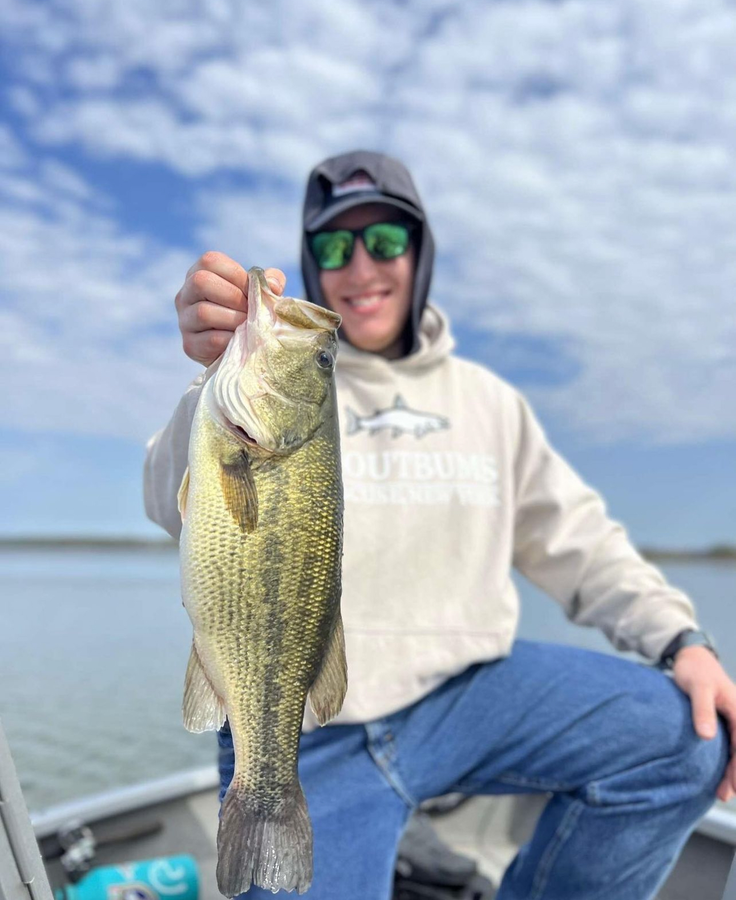
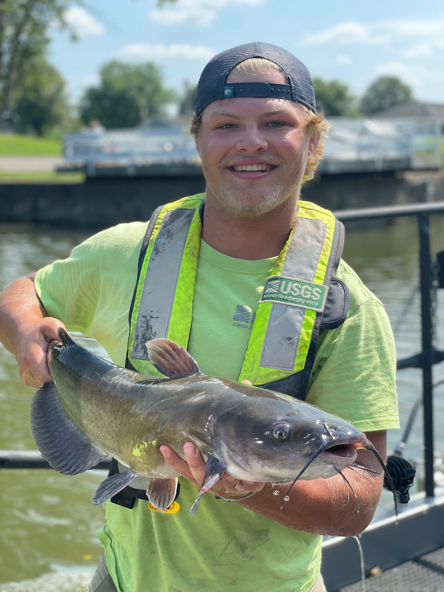
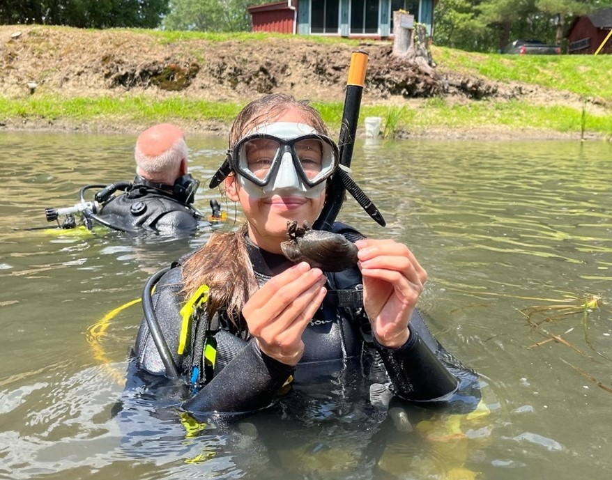
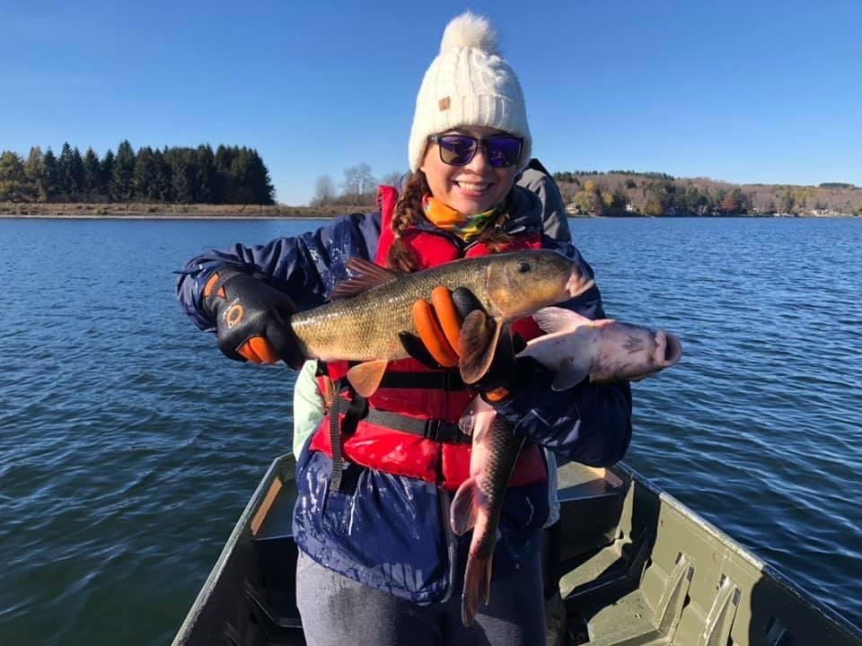

Current students

Alex Allen
Program: MS Lake Management
Project description: I am currently working on White Birch Lake, in Broome County, New York. I will be collecting baseline data and creating a plan for the management of the lake.

Billy Benedict
Program: MS Biology
Project description: The goal of my thesis work is to characterize the ecological value of Hudson River tributaries. We plan on sampling multiple trophic levels and calculating biological productivity, with the hope that this work will provide rationale for future restoration projects within the Hudson River watershed.
Eli Creedon
Program: MS Lake Management
Project description: I am currently monitoring and developing a watershed management plan for Horseshoe Pond and Deer River Flow, located in Franklin County and the Northern Adirondack Park.

Ben Cuppett
Program: MS Lake Management
Project description: I am currently studying Otter Lake in Oneida County, New York. This lake is home to many residents and is used for many forms of recreation. About 15 years ago Grass carp were stocked in their lake to control plants. During my program I will be going compiling past data and collecting new data to make a management plan for Otter Lake.
Alex Javitz
Program: MS Lake Lake Management
Project description: I am studying Loon Lake in Wayland, NY. This is a residential kettle lake within the Finger Lakes Region of western New York. During my study, I will use previous data collected from CSLAP reports along with the data that I collect to create a management plan for Loon Lake.
Nicholas Jordan
Program: MS Biology
Project description: The focus of my thesis is on the cold-water fishery of Otsego Lake, NY, using current and historical data to better understand lake trout (Salvelinus namaycush) population size structure and fish condition. Through the years there has been dynamic shifts in the lake food web and trophic status that affect lake trout as the top predator of the cold-water fishery. I will be using gill net surveys of lake trout form the New York State Department of Environmental Conservation (NYSDEC) collected over the past 3 decades coupled with modern hydro acoustics methods to help quantify current population status.

Kari Minissale
Program: MS Biology
Project description: I am an MS Biology student with a focus on the aquatic sciences. My thesis work is focused on distribution of American eel Anguilla rostrata in the upper Susquehanna River watershed using a combination of electrofishing and environmental DNA (eDNA). Outside of this lab, I also work with endangered and imperiled freshwater pearly mussels, and I am a research SCUBA diver and certified rescue diver.

Asia Rose
Program: MS Lake Management
Project description: I am currently studying Moreau Lake in Saratoga County, NY. Moreau Lake is a kettle lake previously used as a hunting and fishing camp. Currently, the lake is located on state park land and is used for recreational purposes by many. During my study, I will use previous data along with the data I collect in order to create a management plan for Moreau Lake.
Former graduate students (chronological)
Jessica Casey: MS Lake Management (2024)
John (Danny) Skelton: MS Biology (2024)
Derek Shea: MS Lake Management (2024)
Brandon Guerrero: MS Biology (2023)
Matthew Best: MS Biology (2023)
Sinead Comerford: MS Lake Management (2023)
Lucas Le Tarte: MS Lake Management (2022)
David Pfuhler: MS Lake Management (2020)
Samantha Carey: MS Lake Management (2020)
Cindy Sosa: MS Lake Management (2020)
Hayley Dower: MS Biology (2020)
Erin Gilligan: MS Biology (2020)
Stradder Caves: MS Lake Management (2019)
David Andrews: MS Lake Management (2019)
Joseph O’Reilly: MS Lake Management (2019)
George Smith: MS Lake Management (2019)
Ryan Elliott: MS Lake Management (2019)
Joseph (Ben) Casscles: MS Lake Management (2018)
Edward Kwietniewski: MS Lake Management (2017)
Christian Jenne: MS Lake Management (2017)
Alejandro (AJ) Reyes: MS Lake Mangement (2016)
This work is licensed under a Creative Commons Attribution 4.0 International License. Data are provided for educational purposes only unless otherwise noted.